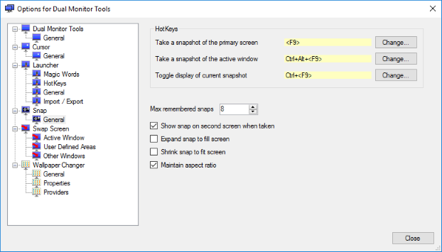

Dual Snap
Dual Snap
Snap allows you to capture the image on the primary monitor and display it on the secondary monitor by the use of a user defined hotkey. This works with both normal window applications and some full screen applications like games.
You can take multiple snapshots and review them later and copy them to the clipboard or save them as PNG files.
It is expected that it may be of use with applications and games that have some static information which can not be displayed during the active part of the application.
'Snap' options
Amongst these options is the option to allow you to specify a hotkey to take the snap.
Pressing the hotkey at any time will capture the image on the primary monitor and display it on your second monitor, assuming you have the Show snap on second screen when taken checked in the options dialog.
The Snap
When a snap is taken and displayed on the second monitor, you will not be able to interact with any windows that were on that monitor until the snap is hidden.
When the snap is displayed, right clicking on it will bring up a context menu which includes the following items:
- Snap! - Captures the image on the primary monitor. This is the same as using the hotkey.
- Show Snap - This is a checked item which allows you to display/hide the current snap on the second monitor.
- Snaps - Shows a list of your previous snaps. Clicking on one will make it the current snap and display it on the second monitor. The most recent snap will be at the top of the list.
- Copy - Copies the current snap to the clipboard.
- Save As - Saves the current snap to a PNG file.
Known Problems
It doesn't work with some older games, possibly due to different colour depths. This needs further investigation.
If you use it on a computer with a single monitor, then the snap is displayed on the primary monitor. As the snap is static, it may look like the computer has crashed, but if you right-click anywhere on the screen you can uncheck Show Snap to remove the display of the snap.